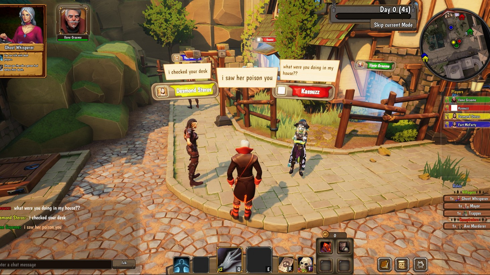

Terríveis assassinatos tomam conta do antes pacato vilarejo de Eville.
Todos os dias, os Aldeões podem decidir quem são os suspeitos e executá-los, até que todos os vilões sejam descobertos.
Minta e traia seus amigos até alcançar a vitória. No jogo multijogador de dedução social, Eville, você está num vilarejo onde ocorrem assassinatos misteriosos. Alguns até diriam que você é o culpado... Será mesmo? Convença os outros de que você não é um assassino se quiser continuar vivo! Inspirado em jogos de dedução social populares, como Lobisomem, Eville é uma nova abordagem desse conceito que traz jogadas e interações em tempo real. Você assume o papel de Aldeão ou Conspirador e age quando ninguém estiver olhando. Coloque vigias para observar outros jogadores ou ande pelo vilarejo para visitar as casas e cometer os assassinatos em série. Sua missão é se comunicar com outros jogadores e provar sua inocência. Aproveite as suas habilidades únicas de classe e ajude o seu time a sobreviver.
Enredo
Terríveis assassinatos tomam conta do antes pacato vilarejo de Eville. Todos os dias, os Aldeões podem decidir quem são os suspeitos e executá-los, até que todos os vilões sejam descobertos. Porém, todas as noites os Conspiradores também se reúnem para decidir assassinar outro Aldeão inocente até dominarem todo o vilarejo. O seu papel é escolhido aleatoriamente e você não tem a menor ideia de quem é seu aliado. Use os seus poderes e habilidades sociais para descobrir!